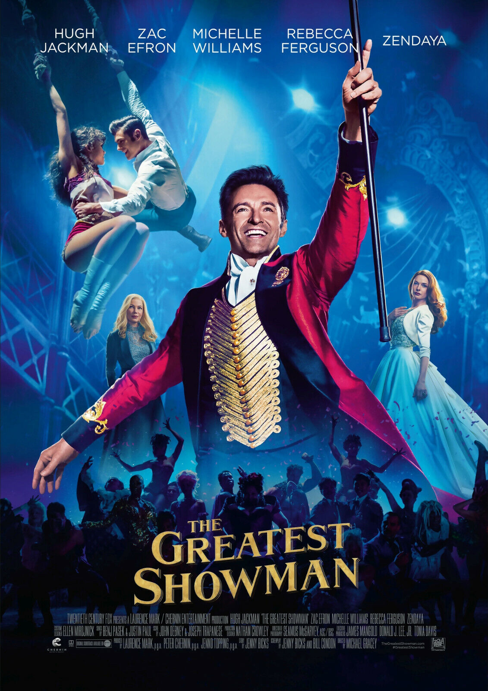

The Greatest Showman
Growing up in the early 1800s, P.T. Barnum displays a natural talent for publicity and promotion, selling lottery tickets by age 12. After trying his hands at various jobs, P.T. turns to show business to indulge his limitless imagination, rising from nothing to create the Barnum & Bailey circus. Featuring catchy musical numbers, exotic performers and daring acrobatic feats, Barnum's mesmerizing spectacle soon takes the world by storm to become the greatest show on Earth.
Coach Carter
In 1999, Ken Carter (Samuel L. Jackson) returns to his old high school in Richmond, California, to get the basketball team into shape. With tough rules and academic discipline, he succeeds in setting the players on a winning streak. But when their grades start to suffer, Carter locks them out of the gym and shuts down their championship season. When he is criticized by the players and their parents, he sticks to his guns, determined that they excel in class as well as on the court.

The Green Mile
Paul Edgecomb (Tom Hanks) walked the mile with a variety of cons. He had never encountered someone like John Coffey (Michael Clarke Duncan), a massive black man convicted of brutally killing a pair of young sisters. Coffey had the size and strength to kill anyone, but not the demeanor. Beyond his simple, naive nature and a deathly fear of the dark, Coffey seemed to possess a prodigious, supernatural gift. Paul began to question whether Coffey was truly guilty of murdering the two girls.